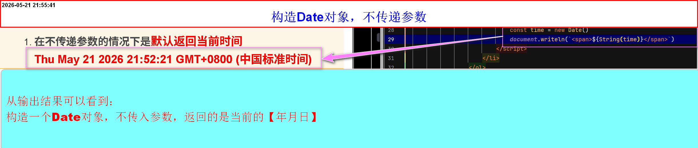
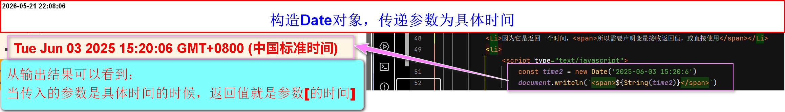
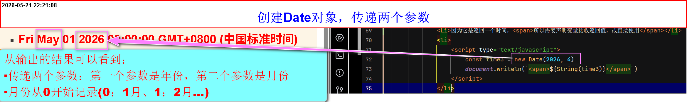
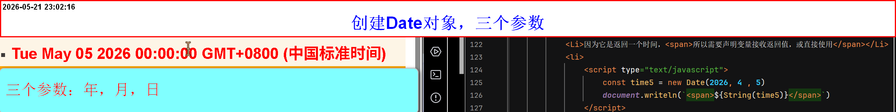
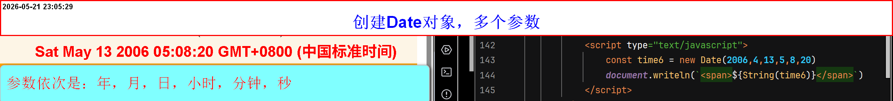

时间对象
Date
- JS提供的内置构造函数，专门用来获取时间
创建时间对象的方法
- 方法：
new Date() -
注意事项：
-
在不传递参数的情况下是默认返回当前时间
- 语法：
new Date() - 不传递参数
- 自动转换为字符串
- 每次刷新，都会自动将时间更新到现在的时间
- 因为它是返回一个时间，所以需要声明变量接收返回值，或直接使用
-

- 语法：
-
在传入参数为字符串
- 语法：
new Date('2025-06-03 15:20:6') - 支持的字符串形式(1)：
'2025-06-03 15:20:6' - 支持的字符串形式(2)：
'2025/06/03 15:20:6' - 字符串严格按照形式规范写，否则报错
- 返回值是输入参数的时间
- 每次刷新，时间不会自动更新
- 因为它是返回一个时间，所以需要声明变量接收返回值，或直接使用
-

- 语法：
-
参数为number类型
-
传递一个参数
- 语法：
new Date(1000) - 参数的意思是：毫秒数
- 当前时间都是从：
1970-1-1 0:0:0开始记时 -
返回值：秒数由自己决定，小时由所在区域决定，其他都是初始值
(1970-1-1 0:0:0) - 每次刷新，时间不会自动更新
- 因为它是返回一个时间，所以需要声明变量接收返回值，或直接使用
-

- 语法：
-
传递两个参数
- 语法：
new Date(2026，20) - 传递参数两个参数，第一个参数：表示年第二个参数表示月份
- 注意：月份从0开始记录[0表示1月，1表示2月......]
- 返回值：年月日由参数决定，其他都是初始值
(1970-1-1 0:0:0) - 每次刷新，时间不会自动更新
- 因为它是返回一个时间，所以需要声明变量接收返回值，或直接使用
- 语法：
-
传递三个参数
- 语法：
new Date(2026，20) - 传递参数两个参数，第一个参数：表示年第二个参数表示月份第三个参数表示日期
- 注意：月份从0开始记录[0表示1月，1表示2月......]
- 返回值：年月日由参数决定，其他由浏览器自行决定
(1970-1-1 0:0:0) - 每次刷新，时间不会自动更新
- 因为它是返回一个时间，所以需要声明变量接收返回值，或直接使用
-

- 语法：
-
其他多个参数依次是：
年，月，日，小时，分钟，秒- 除只传递一个参数为毫秒数以外，其他返回值的最终结果，取决于后续参数的个数(
参数顺序严格按照：
年，月，日，小时，分钟，秒) - 月份始终从0开始计算
- 参数不足处，由初始时间替代(1970-1-1 0:0:0)
-

- 除只传递一个参数为毫秒数以外，其他返回值的最终结果，取决于后续参数的个数(
参数顺序严格按照：
-
-